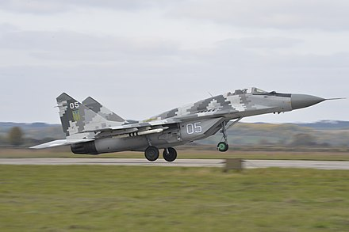

Привид Києва
При́вид Ки́єва— міська легенда про персонажа російсько-української війни, українського пілота-аса; збірний образ пілотів 40-ї бригади тактичної авіації[1][2][3]. Його описують як пілота МіГ-29, який за перші 30 годин російського вторгнення в Україну здобув 6 повітряних перемог у небі над Києвом: збив 2 літаки Су-35, 2 літаки Су-25, по 1 літаку Су-27 і МіГ-29[4][5][6][7][8][9].
Тло
24 лютого 2022 року почалося офіційне вторгнення Росії в Україну в межах ескалації війни, що вже існувала, між двома країнами. Під час наступу на столицю України Київ, який розпочався в перший день вторгнення, у соціальних мережах почали широко поширювати відеоролики, на яких зображені винищувачі в Україні незабаром після початку вторгнення, включаючи твердження про пілота, що збив кілька російських літаків[10][11]. Пілот літака МіГ-29, прозваного українцями «Привидом Києва», як стверджується, виграв шість повітряних боїв у небі Києва протягом перших 30 годин вторгнення[7][12]. Повідомляється, що ці шість літаків — два Су-35, два Су-25, Су-27 та МіГ-29[4][5][13][14].
Міністерство оборони України на своїх сторінках у соцмережах припустило, що «Привидом Києва» може бути один із досвідчених військових льотчиків запасу, які оперативно повернулися до лав ЗСУ після ворожого вторгнення[15].
Про одне з відео, опубліковане 25 лютого, твіттер-каналом Ukrainelive стверджувалося, що там зафіксовано політ «Привида Києва» на літаку. Проте насправді це був фрагмент з відеогри Digital Combat Simulator World[16]. Декілька фото, поширювані в соцмережах, містили підписи, що пілота звати Володимир Абдонов, однак ці фото виявилися відредагованими. Насправді там був зображений канадський пілот або загиблий сапер Віталій Скакун[16].
Колишній президент України Петро Порошенко опублікував 26 лютого твіт із фотографією пілота винищувача, стверджуючи, що це «Привид Києва»[17][18]. Пізніше з'ясувалося, що фотографію було повторно використано з повідомлення Міністерства оборони від 2019 року, на якому було зображено пілота, що випробовує новий шолом[19]. 27 лютого Служба безпеки України повідомила у пості на Facebook, що «Привид Києва» збив 10 ворожих літаків[20].
7 березня 2022 року «Привид Києва» поблизу Обухова збив ворожу крилату ракету «Калібр»[21].
Приклад «Привида Києва» стали наслідувати захисники міста Ізюм, що збили понад 10 російських літальних апаратів[22].
Особа «Привида Києва»
За однією з версій, справжнє ім'я пілота, відомого як «Привид Києва», не розкривається з метою його безпеки. На фото, де можливо зображено пілота, видно доволі молодого чоловіка, чиє обличчя приховано балаклавою[9].
Водночас реальність існування «Привида Києва» ставиться під сумнів як багатьма журналістами, так і громадськістю. Один з пілотів Васильківської бригади висловився, що «Привид Києва» — це збірна назва всіх пілотів Васильківської 40 бригади тактичної авіації[9]. Такої ж думки дотримується радник керівника Офісу Президента Олексій Арестович[23]. Він зазначив, що не думає, що існує пілот, який зміг збити таку кількість російських літаків, а от колективно льотчики, які прикривають Київ зокрема, збили багато[24]. Також Арестович заперечив думку, що «Привидом Києва» був загиблий льотчик Степан Тарабалка[25].
29 квітня 2022 року британське видання «The Times» опублікувало матеріал в якому назвала українського льотчика Степана Тарабалка «привидом Києва». За першу добу війни йому вдалося знищити шість ворожих літаків: Су-27, МіГ-29, два літаки Су-35 та два — Су-25. Потім український ас на своєму МіГ-29 довів кількість знищених літаків агресора до 40[26].
30 квітня 2022 року Командування Повітряних Сил ЗСУ заперечило, що Степан Тарабалка є «Привидом Києва», також заперечили й сам факт існування легендарного пілота. Мовляв, «Привид Києва» — це збірний образ пілотів 40-ї бригади тактичної авіації Повітряних сил, які захищають небо столиці[2][3]. Також Командування закликало українців «не видавати бажане за дійсне» та «перевіряти джерела інформації перед тим, як її поширювати»[3].
«Привид Києва» в масовій культурі
- Пісню про льотчика на початку березня 2022 року записав український шоумен Сергій Подвеза[27]. Текст покладено на мелодію пісні «Фантом». Пісню про «Привида Києва» виконали Колін, LifeGenesis та інші.
- Група мисткинь на чолі з Іриною Костенко створили нарукавний знак на честь «Привида Києва»[28].
- В Японії опублікована манґа про Привида Києва[29].
- У Подільському районі Києва створили найбільшу в Україні інсталяцію з квітів площею 150 квадратних метрів, присвячену «Привиду Києва»[30]. За адресою: вул. Богдана Хмельницького, 56А встановлено мініскульптуру проєкту «Шукай», присвячену «Привидові Києва» (скульпторка Анна Роздорожнюк із Хмельницького). Прикмета скульптурки: Мене торкнись – перемогу наблизь[31].
- 27 серпня 2022 року, на День авіації, на київському Подолі відкрили мурал, присвячений «Привиду Києва»[32][33].